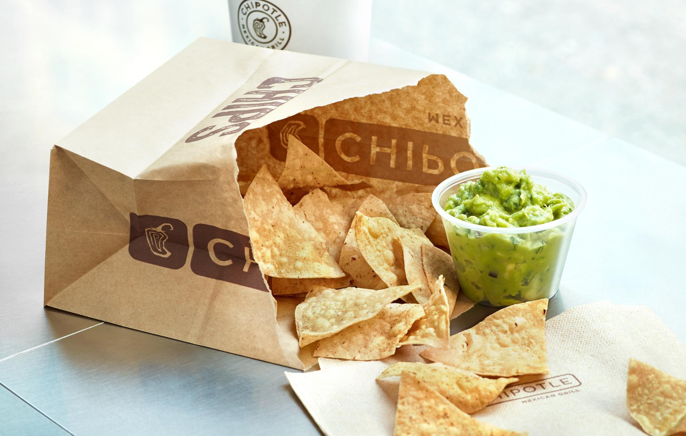

Chipotle Guacamole
$1 for guac??? That ain't it chief. Or should I say chef ;) because you're gonna make it yourself
Ingredients
- 2 ripe ha$$ avocados
- 2 tsp lime juice
- 2 tbsp chopped cilantro (sorry soap gene people)
- 1/4 cup chopped red onion
- 1/2 jalepeno, chopped
- 1/4 tsp salt
Instructions
- Cut avocados in half and remove pits.
- Scoop avocados and put in a medium bowl, then toss and coat with lime juice.
- Add salt, and using a fork, mash until smooth consistency is achieved.
- Fold in remaining ingredients and mix well.
- Taste and add more of whatever you think it's missing.